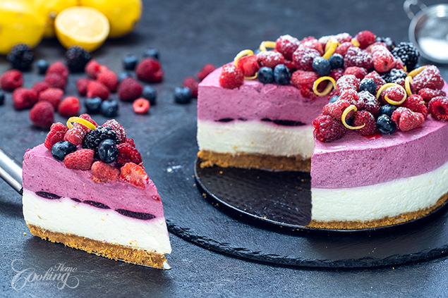

Berry Lemon Yogurt Mousse Cake (NO BAKE) [Ø 28 cm]

Beschreibung:
Wer Lust auf einen luftig lockeren Mousse Kuchen hat, ist hier genau richtig.
Der Berry Lemon Mousse Cake passt hervorragend zum Sommer und verleiht dem Tag etwas Frische!
Zutaten:
Boden:
- 350 g Kekse
- ca. 7 g Zitronenschale
- 154 g Butter (je nach der Art der Kekse mehr)
Beerensauce:
- 560 g gemischte Beeren (Himbeeren, Johannisbeeren, Heidelbeeren)
- 42 ml Zitronensaft
- 140 g Zucker
- 9.8 g Gelatinepulver
- 63 g kaltes Wasser
Mousse:
- 9.8 g Gelatinepulver
- 63 g kaltes Wasser
- 420 g Greek Yogurt
- 84 g Puderzucker
- 14 g Zitronenschale
- 420 g Schlagsahne
- 252g Greek Yogurt
- 336 g Schlagsahne
Anleitung:
Beerensauce:
- 560 g Beeren mit 42 ml Zitronensaft und 140 g Zucker in einem Topf verrühren und für ca. 10 min kochen
- 9.8 g Gelatinepulver mit 63 g kaltes Wasser für 5-10 min ziehen lassen
- Gelatinemasse in die warme Beerenmischung kippen und umrühren
- 112 g der vollständigen Beerensauce entfernen und zur Seite legen
Boden:
- 250 g Kekse mahlen
- 154 g Butter schmelzen
- 7 g Zitronenschale und die geschmolzene Butter in die Keksmischung hinzufügen
- Keksmischung auf den Formboden verteilen, glatt drücken und in den Kühlschrank stellen (Der Boden ist fertig!)
Mousse:
- 9.8 g Gelatinepulver mit 63 g kaltem Wasser 5-10 min ziehen lassen
- 420 g Greek Yogurt mit 84 g Puderzucker und 14 g Zitronenschale mixen
- die Gelatinemasse kurz aufkochen und in den Yogurtmix geben
- 420 g Schlagsahne steif schlagen und langsam in die Yogurtmischung unterrühren (Der Zitronenmousse ist fertig!)
- Den Zitronenmousse über den Boden legen, kühlen und die 112 g Beerensauce oben drauf platzieren (Eine Randfolie ist zu empfehlen)
- 252 g Greek Yogurt in die restliche Beerensauce kippen und verrühren
- 336 g Schlagsahne steif schlagen und mit der Beerenmousse untermischen (Die Beerenmousse ist fertig!)
- Die Beerenmousse auf den Kuchen geben und 6 Stunden kühlen lassen
Deko:
- Randfolie entfernen
- Frische Beeren mit Zitronenschalen und Puderzucker hinzufügen
- Zeit zum Genießen!
Back to top
Home